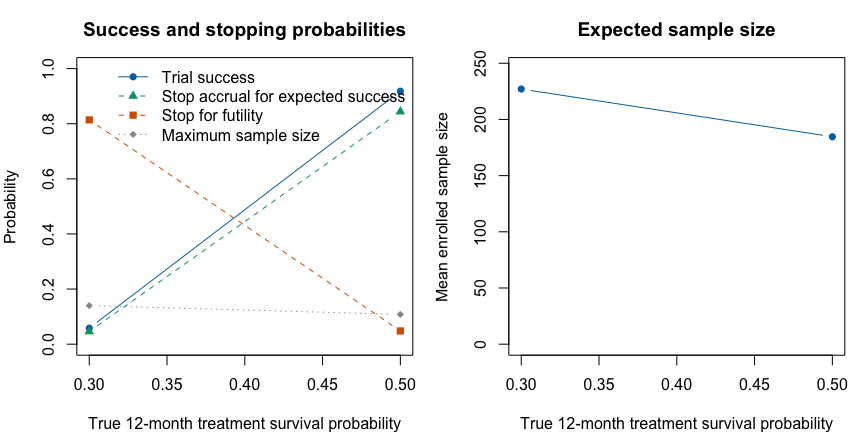
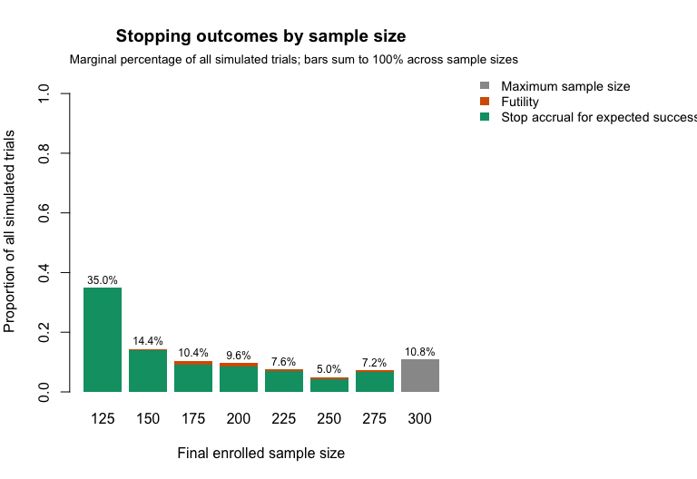
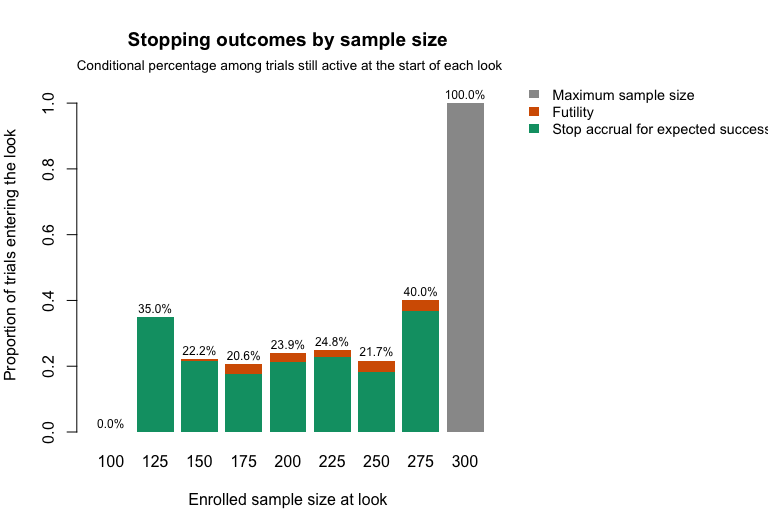
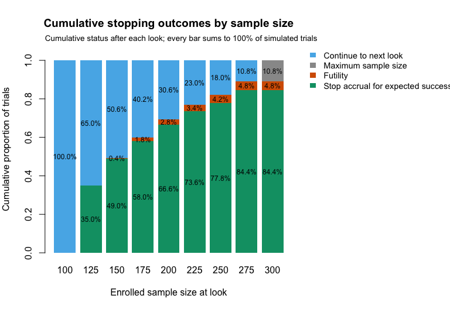

Broglio et al. (2014) presented a hypothetical trial example. We use
a similar setting and show how each statistical and operational
assumption is represented in goldilocks.
The setting is a two-arm trial with equal randomization to control or treatment. The primary endpoint is overall survival (OS), measured from enrollment to death from any cause or last follow-up. The simulation treats enrollment and randomization as occurring at the same time. The assumed 12-month OS probability in the control arm is 30%. The minimum and maximum sample sizes are 100 and 300, respectively, and no loss to follow-up is assumed. Each participant is followed until death or 12 months, whichever comes first. After an expected-success stop or enrollment of 300 participants, the primary analysis is conducted once all enrolled participants’ required event or censoring outcomes are available. Its calendar time therefore depends on the last observed event or censoring time.
From this information, we have:
block = 2 and
rand_ratio = c(control = 1, treatment = 1) (default
parameters)end_of_study = 12hazard_control = prop_to_haz(1 - 0.30, endtime = 12) (note
that the input argument is the failure proportion, not the survival
proportion)cutpoints = NULL (default
parameter)N_total = 300prop_loss = 0Named arms make unequal allocation unambiguous. For example,
rand_ratio = c(control = 1, treatment = 2) specifies 1:2
randomization. Unnamed values are interpreted in control-treatment order
for backward compatibility, but explicit arm names are recommended in a
protocol simulation.
Sample-size selection analyses are planned after 100 participants have enrolled and after each additional 25 participants. Futility stopping is allowed from the first analysis, with \(F_n=0.10\). Stopping accrual for expected success is allowed from 125 participants onward, with \(S_n=0.90\). The assumed enrollment rate is constant at five participants per month.
Enrollment is stochastic even though the rate is constant. The
package fixes the first patient at calendar time zero and generates each
later inter-arrival gap from an exponential distribution with rate 5 per
month. Consequently, the expected time from the first to the 300th
enrollment is \((300 - 1) / 5 = 59.8\)
months, but the realized completion time differs between simulated
trials. lambda_time = NULL indicates that there are no
enrollment-rate changes; zero is implicit and must not be supplied.
For comparison, a ramp-up specification such as
lambda = c(2, 5) and lambda_time = 6 assigns
positive realized enrollment times in \((0,6]\) to 2 expected enrollments per month
and later times to 5 per month. The first participant at zero is the
fixed calendar origin. Fractional changes such as
lambda_time = 6.5 are also simulated exactly.
Enrollment-rate knots use the trial calendar measured from first
participant in, whereas hazard cutpoints use each
participant’s follow-up time measured from that participant’s
enrollment. The two schedules are independent and need not share their
knots.
From this information, we have:
interim_look = seq(100, 275, 25)Fn = rep(0.10, 8)Sn = c(1, rep(0.9, 7))Qn = 1 (the
default)lambda = 5 and lambda_time = NULL (default
parameter)Note that the first value of Sn is 1. This is because
the trial is not allowed to stop for predicted success at the first
interim analysis of \(n = 100\). The
remaining elements of Sn are 0.9, corresponding to 90%.
The primary analysis is a two-sided log-rank test, with success declared at the \(\alpha = 0.05\) level.
From this information, we have:
alternative = "two.sided"
and method = "logrank"prob_ha = 0.95For a frequentist analysis, goldilocks expresses
evidence as \(1-p\), so
prob_ha = 0.95 corresponds to a two-sided significance
level of 0.05. A Bayesian analysis instead compares a posterior
probability with prob_ha; the common numerical scale does
not make the frequentist and Bayesian decision rules inferentially
equivalent. The log-rank analysis requires h0 = 0,
corresponding to equality of the survival distributions.
The example above uses a two-sided test. A design targeting benefit
in one direction can instead prespecify a one-sided test. The
cox and logrank methods support all three
alternatives via the alternative argument. For these
methods, the direction of benefit is:
alternative = "less" declares success when the
treatment arm has a lower hazard (longer survival) than
control.alternative = "greater" declares success when the
treatment arm has a higher hazard.For instance, to run the same design as a one-sided log-rank test at the 0.025 level, we would set:
The frequentist binary risk-difference analyses support all three
alternatives and compare \(p_{\text{treatment}} - p_{\text{control}}\)
with h0. Use method = "riskdiff-fm" for a
Farrington-Manning score test that remains defined for sparse boundary
tables, or method = "riskdiff-wald" for the plug-in Wald
test. The Bayesian test (method = "bayes-surv") requires a
one-sided alternative ("less" or "greater"),
and "two.sided" raises an error. For the Bayesian test the
effect is measured on the cumulative-failure-probability scale, \(p_{\text{treatment}} - p_{\text{control}}\)
at end_of_study, compared against the margin
h0 (default 0):
alternative = "less" declares success when the
posterior probability that \(p_{\text{treatment}} - p_{\text{control}} <
h_0\) exceeds the threshold prob_ha – i.e. the
treatment arm has a failure probability lower than the h0
margin relative to control. With the default h0 = 0, this
means lower failure probability (longer survival) than control.alternative = "greater" declares success when the
posterior probability that \(p_{\text{treatment}} - p_{\text{control}} >
h_0\) exceeds prob_ha.For method = "rmst", the effect is instead
treatment-minus-control restricted mean survival time through a fixed
rmst_tau. Longer survival corresponds to
alternative = "greater". With time measured in months,
h0 is a difference in months: use h0 = 0 for
superiority, or h0 = -1 for non-inferiority allowing a loss
of one month of RMST. Choose the method, effect scale, direction, and
horizon together before evaluating the design. The RMST vignette gives a worked example with a delayed
treatment effect and explains the support required through
rmst_tau.
The operating characteristics will be determined using 500 simulated trials. At each interim analysis, we will use 100 imputations and assume independent weakly-informative \(\operatorname{Gamma}(0.1, 0.1)\) prior distributions for the treatment and control arm event time hazard rate parameters. As this is computationally expensive overall, we will exploit the option to parallelize the simulations over multiple cores.
N_trials = 500N_impute = 100prior_surv = c(0.1, 0.1)ncores = 8seed = 123The parameter N_mcmc is not used by the log-rank test.
Here prop_loss = 0 means no dropout. A positive value would
specify the CDF of an independent exponential dropout time at
end_of_study; actual censoring by dropout can be less
frequent because events can occur first. Log-rank, Cox, and RMST
analyses retain right-censored follow-up with
imputed_final = FALSE, including when dropout occurs.
Imputed final analyses are not available for
method = "logrank".
For methods accepting imputed_final = TRUE, complete
final outcomes use the selected test directly. With missing outcomes,
"cox", "rmst", and
"riskdiff-wald" support final imputation and Rubin pooling,
requiring at least two imputations and positive total variance. FM final
imputation is unsupported; simulations with
method = "riskdiff-fm" and
imputed_final = TRUE require zero dropout in both arms.
Binary analyses with imputed_final = FALSE exclude
incomplete endpoint statuses; that complete-case analysis can be biased
even under independent dropout, because early events can be observed
before dropout. Binary designs with dropout should assess final
imputation and its model assumptions.
Initially, we want to determine the power to detect a significant treatment effect when the OS rate at 12-months for the treatment arm is 50%.
hc <- prop_to_haz(0.7, endtime = 12)
ht <- prop_to_haz(0.5, endtime = 12)
out_power <- sim_trials(
hazard_treatment = ht,
hazard_control = hc,
cutpoints = NULL,
N_total = 300,
lambda = 5,
lambda_time = NULL,
interim_look = seq(100, 275, 25),
end_of_study = 12,
prior_surv = c(0.1, 0.1),
block = 2,
rand_ratio = c(control = 1, treatment = 1),
prop_loss = 0,
alternative = "two.sided",
Fn = rep(0.10, 8),
Sn = c(1, rep(0.9, 7)),
prob_ha = 0.95,
N_impute = 100,
N_trials = 500,
method = "logrank",
ncores = 8,
seed = 123)The 500 replicates used here are sufficient for illustration but not for a definitive design decision. A larger simulation should be used when greater precision is needed for type I error, power, or expected sample size.
To estimate type I error, we simulate under the null by setting the
treatment hazard equal to the control hazard. update()
retains the remaining design specification:
initial_oc <- summarise_sims(list(out_power, out_t1error))
knitr::kable(
initial_oc[c(
"scenario",
"n_requested",
"n_used",
"n_failed",
"power",
"stop_success",
"stop_futility",
"stop_max_N",
"mean_N"
)],
digits = 3,
col.names = c(
"Scenario", "Requested", "Used", "Failed runs", "Power",
"Expected success stop", "Futility stop", "Maximum N", "Mean N"
),
caption = "Operating characteristics with a two-sided log-rank test at the 0.05 level. Scenario 1 is the alternative (treatment OS 50%); scenario 2 is the null (treatment OS 30%)."
)| Scenario | Requested | Used | Failed runs | Power | Expected success stop | Futility stop | Maximum N | Mean N |
|---|---|---|---|---|---|---|---|---|
| 1 | 500 | 500 | 0 | 0.934 | 0.864 | 0.030 | 0.106 | 180.6 |
| 2 | 500 | 500 | 0 | 0.062 | 0.044 | 0.754 | 0.202 | 236.6 |
The estimated type I error under this design is the
power value for scenario 2: 6.2%. Its 95% Wilson Monte
Carlo interval is 4.4% to 8.7%. The point estimate alone does not
establish whether the design exceeds the intended 0.05 level; both Monte
Carlo uncertainty and the complete adaptive decision rule matter.
The final-analysis threshold should therefore be calibrated jointly
with the interim rules. As a preliminary candidate, consider \(P < 0.04\), specified as
prob_ha = 0.96. The calibration vignette gives a
systematic grid-search and independent-validation procedure. The
candidate below illustrates a stricter threshold; it is not a validated
calibration.
out_power2 <- update(out_power, prob_ha = 0.96, return_trace = TRUE)
out_t1error2 <- update(
out_power2,
hazard_treatment = hc,
return_trace = FALSE,
seed = 125
)oc_calibrated <- summarise_sims(list(
"target: treatment OS 50%" = out_power2,
"null: treatment OS 30%" = out_t1error2
), max_mcse = c(power = 0.02, mean_N = 3))
target_oc <- oc_calibrated[
oc_calibrated$scenario == "target: treatment OS 50%",
]
null_oc <- oc_calibrated[
oc_calibrated$scenario == "null: treatment OS 30%",
]
format_mc_interval <- function(estimate, lower, upper, digits = 3) {
format_string <- paste0(
"%.", digits, "f [%.", digits, "f-%.", digits, "f]"
)
sprintf(format_string, estimate, lower, upper)
}
oc_calibrated_display <- data.frame(
scenario = oc_calibrated$scenario,
simulations = sprintf(
"%d/%d (%d)",
oc_calibrated$n_used,
oc_calibrated$n_requested,
oc_calibrated$n_failed
),
power = format_mc_interval(
oc_calibrated$power,
oc_calibrated$power_mc_lower,
oc_calibrated$power_mc_upper
),
expected_success = format_mc_interval(
oc_calibrated$stop_success,
oc_calibrated$stop_success_mc_lower,
oc_calibrated$stop_success_mc_upper
),
futility = format_mc_interval(
oc_calibrated$stop_futility,
oc_calibrated$stop_futility_mc_lower,
oc_calibrated$stop_futility_mc_upper
),
maximum_N = format_mc_interval(
oc_calibrated$stop_max_N,
oc_calibrated$stop_max_N_mc_lower,
oc_calibrated$stop_max_N_mc_upper
),
mean_N = format_mc_interval(
oc_calibrated$mean_N,
oc_calibrated$mean_N_mc_lower,
oc_calibrated$mean_N_mc_upper,
digits = 1
)
)
knitr::kable(
oc_calibrated_display,
col.names = c(
"Scenario",
"Used/requested (failed)",
"Power [95% MC CI]",
"Expected success [95% MC CI]",
"Futility [95% MC CI]",
"Maximum N [95% MC CI]",
"Mean N [95% MC CI]"
),
caption = "Operating characteristics with the more stringent P < 0.04 threshold (`prob_ha = 0.96`)."
)| Scenario | Used/requested (failed) | Power [95% MC CI] | Expected success [95% MC CI] | Futility [95% MC CI] | Maximum N [95% MC CI] | Mean N [95% MC CI] |
|---|---|---|---|---|---|---|
| null: treatment OS 30% | 500/500 (0) | 0.058 [0.041-0.082] | 0.046 [0.031-0.068] | 0.814 [0.778-0.846] | 0.140 [0.112-0.173] | 227.1 [223.2-230.9] |
| target: treatment OS 50% | 500/500 (0) | 0.918 [0.891-0.939] | 0.844 [0.810-0.873] | 0.048 [0.032-0.070] | 0.108 [0.084-0.138] | 184.6 [179.1-190.0] |
Here, “95% MC CI” means a Monte Carlo confidence interval: it
describes how precisely this finite batch estimates the operating
characteristic under the fixed simulation assumptions. It is not
a clinical confidence interval for the treatment effect and
does not represent uncertainty in the assumed event, accrual, or
loss-to-follow-up models. Probability intervals use the Wilson method,
while mean sample size uses a t interval based on its Monte Carlo
standard error. The optional max_mcse argument warns when a
named precision target is not met; it does not change the simulations or
estimates.
In this illustrative 500-trial simulation, assuming a 50% 12-month OS probability in the treatment arm, 84.4% of trials stopped accrual for expected success, 4.8% stopped for futility, and the mean sample size was 184.6. Estimated power was 91.8%. Under the null scenario, in which treatment and control had the same 12-month OS probability, 81.4% stopped for futility. Larger simulation studies are appropriate when the displayed Monte Carlo precision is insufficient for a final design decision.
The same simulation can be summarized on the calendar-time scale without adding any design arguments. Time zero is first patient enrolled, and the time unit is months in this example. “Analysis ready” is when the last observed event or censoring required for the final analysis becomes available; it does not include an external allowance for data cleaning or database lock. The percentage in the trials column uses all requested simulations as its denominator, so failed and excluded simulations cannot silently disappear.
calendar_oc <- summarise_calendar_time(out_power2)
calendar_duration <- calendar_oc$trial_duration
calendar_duration$trials <- sprintf(
"%d (%.1f%%)",
calendar_duration$n_trials,
calendar_duration$percent_trials
)
calendar_duration$accrual <- sprintf(
"%.1f [%.1f-%.1f]",
calendar_duration$accrual_stop_median,
calendar_duration$accrual_stop_p10,
calendar_duration$accrual_stop_p90
)
calendar_duration$analysis_ready <- sprintf(
"%.1f [%.1f-%.1f]",
calendar_duration$analysis_ready_median,
calendar_duration$analysis_ready_p10,
calendar_duration$analysis_ready_p90
)
knitr::kable(
calendar_duration[c(
"stopping_reason",
"trials",
"mean_N",
"accrual",
"analysis_ready",
"followup_person_time_mean",
"peak_active_followup_mean"
)],
digits = 1,
col.names = c(
"Stopping reason",
"Trials, n (%)",
"Mean enrolled",
"Accrual stopped, median [P10-P90]",
"Analysis ready, median [P10-P90]",
"Mean person-months",
"Mean peak under follow-up"
),
caption = "Calendar-time duration and follow-up burden under the treatment-effect scenario."
)| Stopping reason | Trials, n (%) | Mean enrolled | Accrual stopped, median [P10-P90] | Analysis ready, median [P10-P90] | Mean person-months | Mean peak under follow-up |
|---|---|---|---|---|---|---|
| expected_success | 422 (84.4%) | 168.4 | 30.2 [23.3-49.7] | 41.9 [34.7-61.2] | 1314.5 | 48.9 |
| futility | 24 (4.8%) | 209.4 | 39.9 [31.6-51.9] | 51.8 [43.6-63.3] | 1631.2 | 51.1 |
| maximum_sample_size | 54 (10.8%) | 300.0 | 60.6 [55.5-64.2] | 71.9 [67.4-76.1] | 2338.2 | 51.8 |
| overall | 500 (100.0%) | 184.6 | 32.2 [23.5-57.6] | 44.0 [35.2-69.0] | 1440.3 | 49.3 |
Because out_power2 was simulated with
return_trace = TRUE, a second wide table describes when
each interim look was reached and how many subjects were actively under
follow-up at that time. A trial that stops before a later look remains
in the requested denominator but does not contribute a timing value at
that look.
calendar_interim <- calendar_oc$interim_timing
calendar_interim$reached <- sprintf(
"%d (%.1f%%)",
calendar_interim$n_reached,
calendar_interim$percent_reached
)
calendar_interim$calendar_time <- sprintf(
"%.1f [%.1f-%.1f]",
calendar_interim$calendar_time_median,
calendar_interim$calendar_time_p10,
calendar_interim$calendar_time_p90
)
calendar_interim$active_followup <- sprintf(
"%.0f [%.0f-%.0f]",
calendar_interim$active_followup_median,
calendar_interim$active_followup_p10,
calendar_interim$active_followup_p90
)
knitr::kable(
calendar_interim[c(
"look",
"planned_N",
"reached",
"calendar_time",
"active_followup"
)],
col.names = c(
"Look",
"Planned N",
"Reached, n (%)",
"Calendar month, median [P10-P90]",
"Active follow-up, median [P10-P90]"
),
caption = "Calendar timing and concurrent follow-up at each interim look."
)| Look | Planned N | Reached, n (%) | Calendar month, median [P10-P90] | Active follow-up, median [P10-P90] |
|---|---|---|---|---|
| 1 | 100 | 500 (100.0%) | 19.5 [17.4-22.2] | 40 [32-48] |
| 2 | 125 | 500 (100.0%) | 24.7 [22.0-27.7] | 40 [32-49] |
| 3 | 150 | 325 (65.0%) | 29.8 [26.7-32.5] | 40 [32-48] |
| 4 | 175 | 253 (50.6%) | 34.8 [31.1-37.8] | 40 [33-48] |
| 5 | 200 | 201 (40.2%) | 40.0 [36.0-43.2] | 40 [33-47] |
| 6 | 225 | 153 (30.6%) | 45.1 [41.2-47.8] | 40 [32-48] |
| 7 | 250 | 115 (23.0%) | 50.2 [46.0-53.5] | 40 [33-48] |
| 8 | 275 | 90 (18.0%) | 55.2 [51.0-59.1] | 40 [33-48] |
The same results can be viewed graphically.
plot_sim_ocs() compares final success, stopping behavior,
and expected sample size across the treatment-effect scenarios. Because
the meaning and direction of an effect depends on the chosen analysis,
the effect scale is supplied explicitly; here it is the true 12-month
treatment survival probability. Match values by scenario name so that
they remain aligned when summarise_sims() sorts the
rows.
effect_by_scenario <- c(
"target: treatment OS 50%" = 0.50,
"null: treatment OS 30%" = 0.30
)
oc_calibrated$true_treatment_survival <- unname(
effect_by_scenario[oc_calibrated$scenario]
)
plot_sim_ocs(
oc_calibrated,
effect = "true_treatment_survival",
xlab = "True 12-month treatment survival probability"
)
For a single scenario, plot_sim_stopping() can show four
complementary views. The default marginal view gives each outcome as a
percentage of all simulated trials. The conditional view uses only
trials still active when each look begins as its denominator, while the
cumulative view shows the status of all trials after every look and
includes those continuing to the next look. A flowchart view displays
counts moving from the total simulation set through futility, continued
enrollment, and early success at successive looks. Because
out_power2 retains simulation traces, the latter three
views include reached looks even when no trial stopped at that look.
Percentage labels use a compact size so values at adjacent looks remain
visually distinct.



The predictive-probability decision map requires traces from every simulated trial. These are opt-in because they increase the size of the simulation result:
Each decision-map panel represents an interim look. The horizontal coordinate is the predictive probability of success after continuing to the maximum sample size; the vertical coordinate is the predictive probability if enrollment stops now. Shading and dashed lines show the continuation, futility, and expected-success regions.
Once we have identified a suitable design, we would typically re-run the simulations using a larger number of simulations and, perhaps, imputations.
Broglio KR, Connor JT, Berry SM. Not too big, not too small: a Goldilocks approach to sample size selection. Journal of Biopharmaceutical Statistics, 2014; 24(3): 685–705.